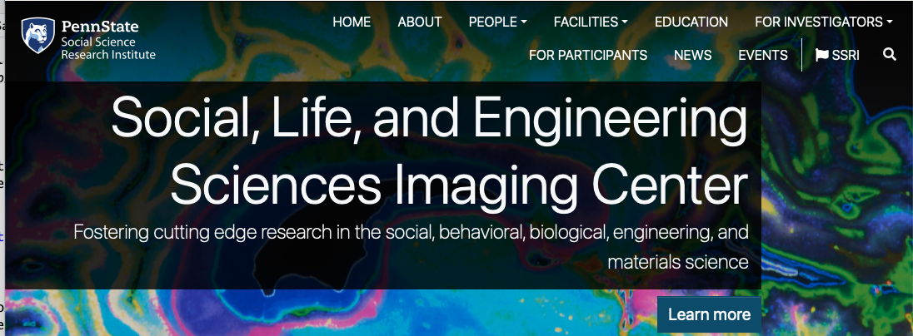
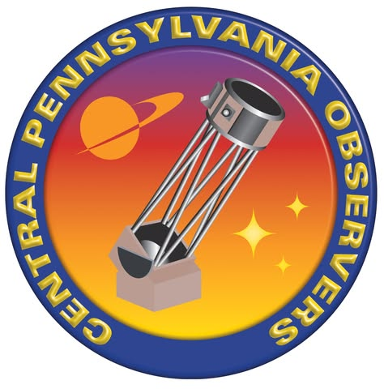

Course intro
2025-08-26
Department of Psychology
Prelude
melodysheep (2011)
“If understanding everything we need to know about the brain is a mile, how far have we walked?”
National Geographic (2014)
Today’s topics
- Introductions
- Structure of the course
- What’s this course about?
- On systems
Introductions
Teaching Assistant
- Katherine “Katie” Billetdeaux

Rick Gilmore







Structure of the course
What is this course about?
- What is behavior?
- How is human behavior similar to/different from other animals?
- What are the neurological bases (of human) behavior?
- What other bases (of human behavior) are there?
- How do the neurological bases of human behavior affect your life?
- Why does taking/drinking X make me feel Y?
- My grandmother has Alzheimer’s disease. What’s happening to her brain?
- Carrie Fisher had bipolar disorder. What’s that about?
- Why is sleep so important for brain health?
- My mom says my frontal cortex isn’t fully mature. Is she right?
- Is it safe for high school athletes to play football (or soccer, hockey, etc.)?
There are many “neurological” bases…
Neurotransmitters
Neurons

Networks

From https://source.wustl.edu/2013/08/brain-flexible-hub-network-helps-humans-adapt/
Brains

Behavior

Keys for success
- Study the figures, not just the text.
- Study regularly – don’t cram.
- Come to class.
- Participate!
Why is biology essential for the science of behavior?
- What is science?
- What distinguishes sciences?
- What is neuroscience?
- Why is neuroscience harder than physics?
What is science?
- Body of facts or truths
- Process of acquiring knowledge
- Systematic study
- Observation, experiment, description
- Aims at reliable, reproducible, general, systematic, universal laws
- Strives for objectivity
Science vs. other ways of thinking
- Science is a way of thinking and a set of behaviors
- Scientists strive toward communal norms Merton (1979): communalism, universalism, disinterestedness, organized skepticism.
- Science describes, tries to predict
Science…
- has led to huge advances in human health & prosperity

Gilmore’s opinion:
- Science will be essential for maintaining & extending these advances in the future
- We all pay (taxes) for scientific research (“Who pays for science? - understanding science,” 2022)
Similarities among sciences
- What are the different kinds of X?
- Form, e.g., anatomy
- How does X work?
- Function, e.g., physiology
- Where did X come from?
- Origins, e.g., development/evolution
Examples
- “Coronavirus gets its name because of its crown-like shape.”
- “Viruses reproduce (and cause illness) by forcing host organisms to create massive quantities of the virus that then spread to others.”
- “Coronavirus originated in non-human animals in China or escaped from a biological laboratory.”
We are family

“The tree of life” (n.d.)
Differences among sciences
- Phenomena of interest (studying what)
- Methods or tools (studying it how)
- At what level(s) of analysis
- Spatial scale (nanometers \(10^{-9}m\) to light-years \(10^{15}m\))
- Temporal scale (milliseconds \(10^{-3}s\) to millenia \(10^3s\))
What is neuroscience?
- The study of the nervous system
- And the behavior it makes possible
- Questions neuroscience asks…
- What are the parts of the nervous system?
- How do the parts work? What do they do?
- Where did they come from?
Spatial and temporal scales

Sejnowski, Churchland, & Movshon (2014)
Why neuroscience is harder than physics


Systems
- Neuroscience studies the nervous system…
- But what are systems?

Related ideas
- Wikipedia on systems theory
- Wikipedia on systems thinking
- Wikipedia on cybernetics
Science concerned with the study of systems of any nature which are capable of receiving, storing, and processing information so as to use it for control.
Your turn
Important
Think of a system you know something about.
What makes it a system?
Non-biological examples

Solar System (Wikipedia)

Earth’s climate system (https://scied.ucar.edu/learning-zone/earth-system/climate-system)

Economic system


Systems have…
- Boundaries
- Components
- Interactions
- Forces/influences
- Inputs, outputs, processes
Systems…
- “Behave” or change state across time
- May (or may not) return to starting state
- Appear to be regulated, controlled, influenced by feedback loops
May be thought of as networks
Cole et al. (2013)
Why is studying systems so hard?
- Single parts -> multiple functions
- Single functions -> multiple parts
- Change structure/function over time (learning, development, evolution) == are dynamic
Why is studying systems so hard?
- Naturally occurring systems not “designed” like human-engineered ones
- What is being exchanged/processed?
- Answer (often): Information
- What is being controlled?
- Stochastic not deterministic
“Butterfly effect”
- https://en.wikipedia.org/wiki/Butterfly_effect
- Wikipedia contributors (2025)
Extra credit assignment
Important
Take your own example system from earlier. What are the components of that system? What are the inputs and outputs? What do the components exchange?
Send a 1 page write-up describing your system and answers to these questions to Katie via Canvas by Friday, September 5 at 5:00 PM for 2 extra credit points.
Take homes
- Evaluation: 3 exams/4; 3 quizzes/4.
- Systematic description and study of the nervous system touches on multiple aspects of behavior and mental experience
Next time
- History of neuroscience
- Levels of analysis
- (if time) Methods
Resources
About
This talk was produced using Quarto, using the RStudio Integrated Development Environment (IDE), version 2025.5.1.513.
The source files are in R and R Markdown, then rendered to HTML using the revealJS framework. The HTML slides are hosted in a GitHub repo and served by GitHub pages: https://psu-psychology.github.io/psych-260-2025-fall/
References

PSYCH 260.001 | © Rick Gilmore under CC BY 4.0